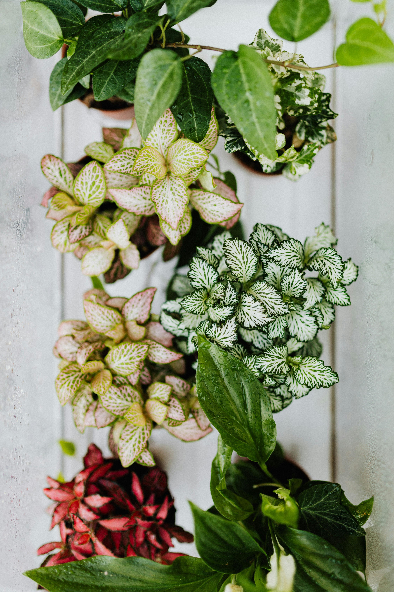

About Sprout & Grow
Located in the heart of Raleigh, North Carolina, Sprout & Grow is a greenhouse nursery dedicated to providing high-quality organic plants and sustainable gardening solutions. We believe that gardening should not only beautify your space, but also support the health of your family, your community, and the environment.
Every plant we offer is carefully nurtured using environmentally responsible practices. From vibrant flowers and hardy vegetables to herbs and indoor greenery, our selection is thoughtfully curated to help gardeners of all experience levels succeed. Whether you are planting your first seed or expanding a thriving garden, we are here to guide you every step of the way.
At Sprout & Grow, we are more than just a nursery—we are a community resource. We host hands-on workshops, seasonal events, and educational programs designed to empower individuals and families to embrace organic gardening. Our knowledgeable team is always ready to provide personalized advice and practical tips to help your garden flourish.
We are proud to serve Raleigh and the surrounding areas by promoting sustainability, transparency, and environmental stewardship. Our mission is simple: to inspire growth in every sense—helping plants thrive, people connect, and communities grow greener together.
Want to get involved? Visit our Events page to explore upcoming workshops, or head to our Products page to discover what’s in season.